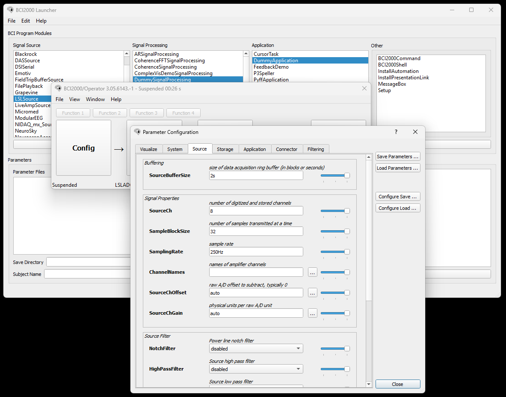
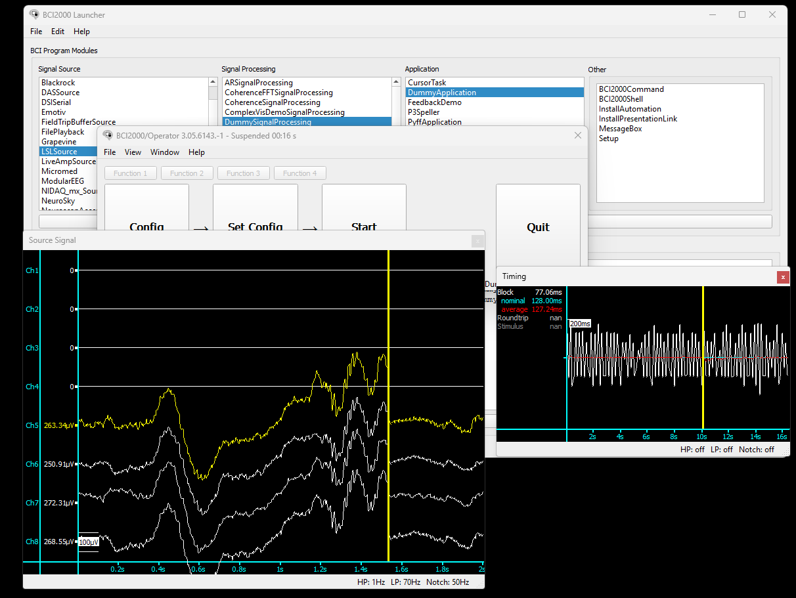

BCI2000
Introduction
The contributions package for BCI2000 contains an LSL source module that can be used to acquire data from LabStreamingLayer (LSL) for use in BCI2000.
It is currently not possible to subscribe to an LSL stream from the Explore device without making changes to the source code of explorepy or building BCI2000 yourself.
This is because the LSL node resolves streams by data type. The last released installer for BCI2000 with Contributions does not contain changes to filter by a custom property. As the LSL node filters out any type that is not EEG, and explorepy and Explore Desktop push the data with the type ExG, the stream cannot be discovered in this version.
This page gives an overview of the options advanced users have to get a data stream from the Explore device as input to BCI2000.
If you want to integrate data from the Explore device into your BCI2000 setup and require help, contact support@mentalab.com.
Option 1: Building BCI2000 locally from the latest code revision
The source code for BCI2000 is available after creating a free account on the BCI2000 website. Their wiki contains an in-depth guide to building the software locally.
The LSL source node available in the contributions to BCI2000 contains fields to set the LSL stream property, StreamSelectionProperty, and value, StreamSelectionPropertyValue, to filter for.
If you have built BCI2000 locally with the latest version of the LSL source node, follow these steps to stream data from your Explore device to BCI2000:
-
Install explorepy or Explore Desktop.
-
If using
explorepy, use thepush2lslcommand to connect to a device and push data from it to LSL.If using Explore Desktop, connect to a device, navigate to the signal visualisation, open the LSL menu by clicking the
LSLbutton, and click on Push data to LSL. -
Open the BCI2000 Launcher or launch a batch script from the
batchdirectory of your BCI2000 installation that usesLSLSourceas the acquisition module.If you are using the BCI2000 Launcher, select
LSLSourceas the Signal Source module and choose the other modules as needed, for exampleDummySignalProcessingandDummyApplication. Then click Launch. -
Click Config in the newly launched Operator to open the configuration for your setup.
Navigate to the
Sourcetab and change the fields according to the device stream:-
SourceCh: The number of channels your device has, for example8,16, or32. -
SamplingRate: The sampling rate the device is set to, for example250Hz,500Hz, or1000Hz. -
SourceChGain: The gain for the signals. The default isauto. Alternatively, set this to1uVper channel, for example1 1 1 1 1 1 1 1for an 8-channel device. -
StreamSelectionProperty: The property of the stream to filter for, for exampletypeorname. -
StreamSelectionPropertyValue: The value of the stream property to filter for. If usingtype, this should beExG. If usingname, this should beExplore_XXXX_ExG, withXXXXreplaced by your device ID.
-

The configuration for the LSL source node needs to be adapted to fit the properties of the Explore device’s LSL stream. In this example, an 8-channel device is pushing to LSL with a sampling rate of 250Hz.
-
To ensure that your configuration is correct, click Set Config.
This will launch a signal visualizer that shows your signals as they arrive via the LSL stream.

If BCI2000 finds the correct stream, either by changing the type to EEG in explorepy or by using a locally built version of BCI2000, the incoming signals can be visualized by clicking Set Config. In this example, only channels 5 to 8 made contact with the skin.
Option 2: Adapting Explorepy
explorepy and Explore Desktop push signals to LSL using the type ExG, because the Explore device can be used to collect different types of biosignals.
The last binary release of BCI2000 with contributions, which includes the LSLSource module, does not allow filtering for a specific property and value. Instead, it filters for the type EEG.
To push data from the Explore device with the type EEG, you can adapt the source code of explorepy.
explorepy is fully open source and can be forked from the public GitHub repository.
To adapt explorepy, follow these steps:
-
Create a fork of
explorepy. -
Pull your newly created fork so that you have it locally.
-
In the pulled repository, navigate to
src → explorepyand opentools.py. -
Find the method
initialize_outletsin the classLslServer. -
Change the line
type='ExG'totype='EEG'where theStreamInfoobject is created for the ExG stream:def initialize_outlets(self): info_exg = StreamInfo(name=self.device_name + "_ExG", type='EEG', channel_count=self.n_chan, nominal_srate=self.exg_fs, channel_format='float32', source_id=self.device_name + "_ExG") info_exg.desc().append_child_value("manufacturer", "Mentalab") [...] -
Create a new environment with dependencies as described in the explorepy documentation.
-
Instead of installing
explorepyin your environment from PyPI withpip install explorepy, navigate to the root folder of yourexplorepyfork and install the local repository:pip install . -
Use the
push2lslcommand to push data from the device to LSL. -
From here, follow steps
3-5from Option 1 to subscribe to the data in BCI2000, skipping steps4.4and4.5.
For more information or support, contact support@mentalab.com.